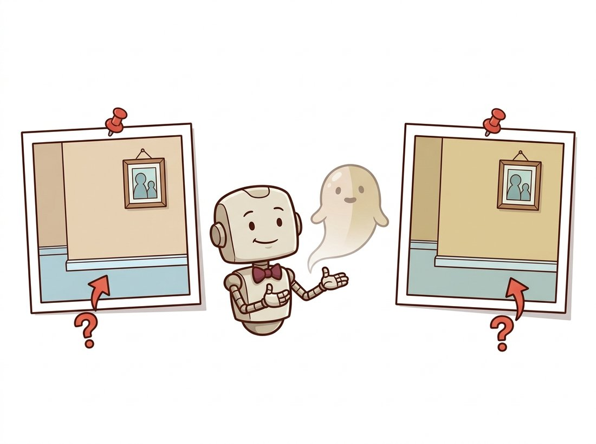

"The paper showed a flawless rotating chair. My first capture showed a flawless rotating chair wrapped in glowing fog, sitting in a room that bent like a funhouse mirror. The difference, it turned out, was eleven photos taken while walking backward and one very shiny window."
A Pipeline That Has Met the Gap Between the Demo and the Driveway
Turning real photographs into a usable 3D scene is a five-stage pipeline, and every stage downstream of a bad earlier stage inherits its errors, so the discipline is to verify each stage before trusting the next. The methods of this chapter, monocular depth, point clouds, NeRF, splatting, are the glamorous middle of a workflow whose success is mostly decided at the unglamorous ends: how you shoot the images, whether structure from motion recovers good poses, and how you clean the result. This section walks the full capture-to-render pipeline end to end, names the failure modes that no paper figure shows (bad poses, reflective surfaces, motion blur, floaters), and gives the practical checks that separate a crisp reconstruction from glowing fog. This is where the projective geometry of Part II and the deep learning of Part III stop being separate subjects and become one craft.
Here is the uncomfortable truth the papers never print: the same NeRF or splatting code that produced a flawless rotating chair in Section 27.4 and Section 27.5 will, on your first real capture, just as faithfully produce a chair wrapped in glowing fog inside a room that bends like a funhouse mirror. The method did not change; your inputs did. Both techniques quietly assumed the same thing: a set of images with accurately known camera poses, and that single assumption is where most real projects silently succeed or fail. This closing section is deliberately practical. It treats NeRF and splatting not as models in isolation but as one stage of a pipeline, and it spends its time on exactly the parts that the research papers, optimizing for a clean result on a curated dataset, leave out, which are precisely the parts that decide whether your reconstruction ships or embarrasses you.
1. The Five Stages Beginner
Every capture-to-render project, whatever the final representation, flows through the same five stages, shown in Figure 27.6.1. Capture: shoot photos or video of the scene from many viewpoints. Pose recovery: run structure from motion (COLMAP) to estimate each image's camera pose and a sparse point cloud, the geometry of Chapter 14. Train: fit a NeRF or Gaussian splat to the posed images. Clean: remove floaters and background artifacts, crop to the region of interest. Export: render a video, extract a mesh, or ship the splat to a viewer or engine. The arrows run one way, and an error introduced at any stage propagates to all the stages after it, which is why verification is built into the workflow rather than left to the end.
The five stages in order are Capture, Pose, Train, Clean, Export, which the question "Can People Trust Clean Exports?" keeps in sequence. The question is also the chapter's hard-won warning: you can only trust a clean export if every earlier stage was sound, because the arrows of Figure 27.6.1 run one way and never back. Spend your attention on the cheap front stages (good capture, verified poses); a flawless training run cannot rescue a scene whose photographs or poses were already broken.
2. Capturing Well: The Decisions That Matter Most Beginner
More reconstructions are saved or ruined at capture time than anywhere else, because no amount of training fixes missing or contradictory information. The rules are few and they follow directly from how structure from motion and view synthesis work. Overlap: consecutive images must share substantial content (roughly 70 percent) so COLMAP can match features across them, exactly the feature-matching requirement from Chapter 10. Coverage: orbit the subject and vary height, so every surface is seen from several angles; a surface seen once cannot be reconstructed in 3D. Sharpness: avoid motion blur (it poisons feature matching and bakes blur into the field), so move slowly or shoot stills. Constant exposure and focus: lock them, because auto-exposure changes a surface's apparent color between frames and confuses the photometric loss. Avoid the hard cases: textureless walls give COLMAP nothing to match, and reflective or transparent surfaces violate the view-synthesis assumption that a surface point has a consistent (if view-dependent) appearance.
Both NeRF and splatting minimize the difference between rendered and observed pixels, which means they treat every photograph as ground truth about what the scene looks like from that pose. If two photos disagree about a surface's color (because auto-exposure shifted, or a reflection moved, or someone walked through the frame), the optimizer cannot satisfy both and resolves the contradiction by inventing semi-transparent "floater" geometry that happens to reproduce each view. Floaters are not a bug in the method; they are the method faithfully fitting inconsistent data. The cure is upstream: consistent captures, locked exposure, and removing transient objects, not more training iterations.
When two of your photos insist a surface is both beige and slightly-more-beige, the optimizer does not throw a tantrum or pick a side. It politely conjures a faint, semi-transparent ghost hanging in mid-air that, viewed from photo one, looks beige, and from photo two, looks slightly-more-beige. The floater is not the model failing; it is the model succeeding at an impossible request with the calm of a bureaucrat who has found a loophole. Blame the brief, not the contractor: fix the captures. The illustration below shows the optimizer politely conjuring its ghost.

3. Pose Recovery and the Verification Habit Intermediate
Stage two runs COLMAP to recover poses, and stage three cannot be trusted unless stage two is verified. The single most valuable habit in this entire pipeline is to look at the sparse reconstruction before training anything. COLMAP reports how many images it successfully registered and produces a sparse point cloud with the camera frustums; a healthy result registers nearly all images and shows a recognizable, undistorted sparse structure. The code below runs the pose-recovery stage through Nerfstudio (which wraps COLMAP) and then inspects the result, the check the museum team of Section 27.4 learned to do the hard way.
# Pose-recovery health gate: read how many images COLMAP actually posed and
# refuse to spend GPU hours on training if too few registered, the cheap check
# that catches poor overlap, motion blur, or reflective surfaces up front.
import json, pathlib
# After running: ns-process-data images --data ./photos --output-dir ./capture
# Nerfstudio writes a transforms.json with one entry per successfully posed image.
transforms = json.loads(pathlib.Path("./capture/transforms.json").read_text())
n_posed = len(transforms["frames"])
print(f"Camera model: {transforms.get('camera_model')}")
print(f"Images successfully posed: {n_posed}")
# A simple health check before committing GPU hours to training.
import glob
n_input = len(glob.glob("./photos/*.jpg"))
ratio = n_posed / max(n_input, 1)
print(f"Registration ratio: {ratio:.0%}")
assert ratio > 0.8, "Too many images failed to register; re-shoot or check overlap/blur."transforms.json tells you how many images COLMAP successfully posed; the assert ratio > 0.8 guard flags poor overlap, motion blur, or reflective surfaces, and means you should fix the capture before spending GPU time on training that is doomed to fail.If registration is poor, the fix is almost always at stages one and two: add images to bridge the gaps where matching failed, mask out reflective regions, or re-shoot the textureless areas with more angle variation. Training a NeRF or splat on bad poses produces the bent-room, double-image artifacts that look like a model problem but are a geometry problem.
4. Training, Cleaning, and Export Intermediate
With verified poses, stages three through five are largely the library-driven commands you saw in the previous two sections: ns-train nerfacto or ns-train splatfacto to fit the field, the live viewer to watch convergence, and ns-export to produce the deliverable. The judgment that remains is in cleaning. Almost every real capture produces some floaters (the inconsistent-data artifacts of subsection 2) and unwanted background. Nerfstudio's viewer lets you set a crop box to keep only the region of interest, which alone removes most distant floaters. For splats, you can additionally prune low-opacity Gaussians and those far from the scene center. The export choice depends on the use: a rendered camera-path video for a presentation, a mesh (via Poisson reconstruction for NeRF density, or SuGaR for splats) for a game engine, or the raw splat .ply for a web viewer.
Who: a civil-engineering survey firm, 2024, producing 3D reconstructions of construction sites from drone footage for progress monitoring. Situation: a junior engineer ran each site by hand, and roughly one capture in three came back with bent geometry or fog, costing a re-flight. Problem: the failures were discovered only after the multi-hour training finished, wasting both the flight and the compute. Decision: they inserted the verification habit of subsection 3 as an automated gate: every capture ran COLMAP first, and the pipeline refused to proceed to training unless the registration ratio cleared 85 percent and the sparse cloud passed a simple bounding-box sanity check; failures triggered an immediate re-flight while the drone was still on site. Result: wasted training runs dropped to nearly zero, and the average turnaround fell by half because failures were caught in minutes, not hours. Lesson: in a production 3D pipeline, the cheapest stage (pose recovery) is the right place to gate the most expensive stage (training); verify early, fail fast, and never spend GPU hours on a capture whose geometry you have not sanity-checked.
The five stages, minus the human judgment in capture and cleaning, are three commands. This is the entire production workflow that this section has been unpacking:
# 1. Capture + pose recovery: extract frames from a video and run COLMAP.
# ns-process-data video --data site_flight.mp4 --output-dir ./capture
# 2. Train (swap nerfacto for splatfacto to get a real-time Gaussian splat):
# ns-train splatfacto --data ./capture
# 3. Export a fly-through video along a chosen camera path:
# ns-render camera-path --load-config ./outputs/.../config.yml \
# --camera-path-filename path.json --output-path render.mp4ns-process-data video extracts frames and runs COLMAP, ns-train splatfacto fits the field, and ns-render camera-path exports a fly-through video, replacing the fragile pre-2023 chain of separate research codebases.Nerfstudio orchestrates COLMAP, the chosen field, the interactive crop-box cleaning in its viewer, and every export format, replacing what was, before 2023, a fragile chain of separate research codebases. It is the reference implementation of the entire chapter's pipeline, and the place to start any real capture-to-render project.
The five-stage pipeline exists because pose recovery, geometry, and appearance were separate problems. The 2024-2026 frontier is dissolving the stages. DUSt3R (2024) and its successor MASt3R regress dense 3D point maps directly from uncalibrated image pairs, recovering geometry and relative pose together without COLMAP. VGGT (Wang et al., CVPR 2025 Best Paper Award) extends this to a feed-forward transformer that predicts cameras, depth, and point tracks for a whole set of images in a single pass. The late-2025 Depth Anything 3 (Lin et al., 2025, arXiv:2511.10647) reports on its benchmark roughly a 35 percent gain in pose accuracy and a 24 percent gain in geometric accuracy over it. A parallel thread targets metric reconstruction directly: MapAnything (Keetha et al., 2025, arXiv:2509.13414) is a single transformer that ingests one or many images, plus optional intrinsics, poses, or depth, and regresses metric scene geometry and cameras in one pass, covering uncalibrated structure from motion, multi-view stereo, and depth completion behind one model. Combined with the feed-forward splat predictors of Section 27.5, these point toward a future where the entire capture-to-render pipeline of this section, pose recovery, training, and reconstruction, is one network evaluation taking seconds rather than a multi-stage workflow taking hours. The same feed-forward 3D-from-images capability is the reconstruction backbone behind the generative 3D and world models of Chapter 36, where the input images themselves are invented rather than captured.
This closes the chapter and, with it, the geometric strand of Part III. You can now recover depth from a single image, store and learn on explicit 3D structure, represent a whole scene as a neural radiance field or a Gaussian splat, and run the full pipeline that turns real photographs into a renderable 3D world. Every method here reconstructs reality. The hands-on lab that closes the chapter pulls the entire ladder into one artifact you build and run, from a single photo lifted into a colored point cloud to a real Gaussian splat captured from your own phone video. The next chapter, Chapter 28: Efficient Vision & Edge Deployment, asks how to make these and all the other heavy models of Part III run on the phones, cameras, and embedded devices where vision actually ships, and Part IV will turn the reconstruction machinery around to generate 3D worlds that were never photographed at all.
For each symptom, state the most likely stage of the pipeline at fault and one concrete fix, using the failure modes of subsections 2 and 3: (a) the reconstructed room appears to bend, with walls that should be straight curving inward; (b) a glowing semi-transparent cloud floats in mid-air with nothing behind it; (c) the entire scene is uniformly blurry even after long training; (d) one wall is completely missing from the reconstruction. Explain why each is an upstream problem rather than a reason to change the NeRF or splat architecture.
Capture a short video of an object (orbit it slowly, locked exposure) and run ns-process-data to recover poses. Extend the health check of subsection 3 into a script that (a) reports the registration ratio, (b) loads the sparse point cloud and prints its bounding-box dimensions, and (c) refuses to proceed if the ratio is below 0.85, exactly the gate the survey firm built. Run it on your good capture and on a deliberately bad one (shot fast, with motion blur, or of a shiny object), and report how the two differ. Submit the script and the two reports.
You run a reconstruction service and three clients arrive: (1) a museum wanting the highest-fidelity archival capture of a small artifact, rendered offline; (2) a real-estate firm needing real-time walkthroughs of houses on mid-range phones; (3) a film studio needing a clean mesh of a set piece to import into their existing graphics pipeline. For each, recommend NeRF or Gaussian splatting (and any export step), and justify the choice in two or three sentences using the speed, quality, deployment, and mesh-extraction trade-offs from Section 27.4 and Section 27.5. Note for which client the 2024-2026 feed-forward methods of the research-frontier callouts would most change your answer.
Objective. Climb the chapter's ladder end to end in one sitting. First lift a single ordinary photograph into a colored 3D point cloud using a 2024 monocular depth foundation model and the camera intrinsics of Chapter 12; then run a real capture-to-render pipeline on a short phone video, recovering poses with COLMAP and training a Gaussian splat with Nerfstudio, ending in an interactive 3D scene you can fly through. The two artifacts (a viewable .ply point cloud and a trained splat) span flat, explicit, splat from the chapter's mental model.
What You'll Practice
- Running a monocular depth foundation model off the shelf and reading its output as relative depth (Section 27.1).
- Back-projecting a depth map into a colored point cloud with the pinhole intrinsics of Chapter 12 (Section 27.2).
- Driving the five-stage capture-to-render pipeline of this section with Nerfstudio and COLMAP.
- Applying the verification habit: checking the COLMAP registration ratio before trusting a training run.
- Comparing the explicit point cloud against the optimized splat as two points on the representation ladder.
Setup
Part A (the point cloud) runs anywhere with PyTorch and needs only one photo of your own. Part B (the splat) needs a CUDA GPU and is easiest in a fresh Conda or Colab environment; budget ten to fifteen minutes for COLMAP plus training on a short clip. If you have no GPU, do Part A in full and read Part B, running its commands later on a Colab GPU runtime.
# Part A: point cloud from one image
pip install torch torchvision transformers open3d numpy pillow
# Part B: capture-to-render (GPU). Follow the official install for your CUDA version:
# https://docs.nerf.studio/quickstart/installation.html
pip install nerfstudio # pulls in COLMAP integration via ns-process-dataSteps
Step 1: Estimate monocular depth for one photo
Take a single photo with clear near and far structure (a desk receding to a far wall works well). Run Depth Anything V2 through the Hugging Face pipeline to get a per-pixel relative depth map. This is the flat rung of the ladder.
from transformers import pipeline
from PIL import Image
import numpy as np
image = Image.open("my_photo.jpg").convert("RGB")
# TODO: build a "depth-estimation" pipeline with model
# "depth-anything/Depth-Anything-V2-Small-hf", run it on `image`,
# and pull the predicted depth out as a NumPy array `depth`.
pipe = ...
result = ...
depth = ... # 2D array, one relative-depth value per pixel
print("depth map shape:", depth.shape, "range:", depth.min(), depth.max())Hint
pipe = pipeline("depth-estimation", model="depth-anything/Depth-Anything-V2-Small-hf"), then result = pipe(image) and depth = np.array(result["depth"], dtype=np.float32). The model returns relative (not metric) depth, so larger values mean farther in this model's convention; you only need consistency, not true meters.
Step 2: Back-project depth into a colored point cloud
Turn the 2D depth map into 3D points using the pinhole back-projection of Section 27.2. With no calibration file, assume a plausible focal length and a principal point at the image center. Each pixel becomes one 3D point carrying its own RGB color. This is the explicit rung.
H, W = depth.shape
rgb = np.asarray(image.resize((W, H)), dtype=np.float32) / 255.0
# A rough pinhole: focal ~ image width, principal point at the center.
fx = fy = float(W)
cx, cy = W / 2.0, H / 2.0
u, v = np.meshgrid(np.arange(W), np.arange(H))
z = depth # use relative depth as the z coordinate
# TODO: back-project each pixel (u, v, z) to a 3D point (X, Y, Z) with
# X = (u - cx) * z / fx and Y = (v - cy) * z / fy, then stack
# X, Y, Z into an (H*W, 3) array `points` and flatten `rgb` to (H*W, 3).
points = ...
colors = ...
print("point cloud:", points.shape)Hint
X = (u - cx) * z / fx; Y = (v - cy) * z / fy; points = np.stack([X, Y, z], axis=-1).reshape(-1, 3) and colors = rgb.reshape(-1, 3). The reconstruction is up to an unknown scale because the depth is relative, which is exactly the scale ambiguity of monocular depth from Section 27.1.
Step 3: Save and inspect the point cloud in Open3D
Wrap the arrays in an Open3D point cloud, write a .ply you can open in any 3D viewer, and launch the interactive window. Orbit it: the scene should have visible depth, with near objects standing out from the far wall.
import open3d as o3d
pcd = o3d.geometry.PointCloud()
# TODO: assign pcd.points and pcd.colors from your `points` and `colors`
# arrays (wrap each with o3d.utility.Vector3dVector), then write
# "scene.ply" and call o3d.visualization.draw_geometries([pcd]).
Hint
pcd.points = o3d.utility.Vector3dVector(points); pcd.colors = o3d.utility.Vector3dVector(colors); o3d.io.write_point_cloud("scene.ply", pcd). If the cloud looks stretched along z, the relative-depth values span a wider range than the x and y extents; scale z down by a constant for display, which does not change the geometry's shape.
Step 4: Capture a video and recover poses with COLMAP
Now switch to the full pipeline. Shoot a short clip (15 to 30 seconds), orbiting one object slowly with locked exposure, following the capture advice of subsection 2. Let Nerfstudio extract frames and run structure from motion (the geometry of Chapter 14).
# TODO: run ns-process-data on your video, writing a processed
# capture (frames + COLMAP poses + transforms.json) to ./capture
ns-process-data video --data my_object.mp4 --output-dir ./captureHint
If COLMAP registers very few frames, your clip moved too fast or the object is textureless or shiny. Re-shoot slower with more overlap before continuing; a bad pose stage corrupts everything downstream, as Figure 27.6.1 warns.
Step 5: Apply the verification gate before training
Implement the cheap check from subsection 3: read the generated transforms.json, compute the fraction of input frames that COLMAP successfully registered, and refuse to proceed below a threshold. This one habit prevents most wasted training runs.
import json, glob, os
with open("./capture/transforms.json") as f:
meta = json.load(f)
n_registered = len(meta["frames"])
n_extracted = len(glob.glob("./capture/images/*"))
ratio = n_registered / max(n_extracted, 1)
# TODO: print the ratio and raise/SystemExit if it is below 0.85,
# the gate the survey firm in subsection 3 enforced.
print(f"registered {n_registered}/{n_extracted} = {ratio:.2f}")
Hint
assert ratio >= 0.85, f"only {ratio:.0%} of frames registered; re-capture". A healthy orbit of a well-textured object usually registers above 0.95; anything below 0.85 means the splat will train on a broken pose graph.
Step 6: Train a Gaussian splat and view it
Fit a 3D Gaussian splat (Section 27.5) to the posed images with Splatfacto, then open the live viewer. This is the splat rung: the explicit point cloud of Part A made differentiable and photorealistic.
# TODO: train splatfacto on ./capture, then open the printed viewer URL.
# (Swap splatfacto for nerfacto to train a NeRF instead and compare.)
ns-train splatfacto --data ./captureHint
The viewer URL prints in the first seconds of training; open it to watch the splat sharpen live. Training to a usable result on a short clip takes only a few minutes on a modern GPU because splatting renders far faster than NeRF.
Step 7: Export a fly-through and compare the two artifacts
Choose a camera path in the viewer, export it, and render a video. Then put the two artifacts side by side: the single-photo point cloud from Part A and the multi-view splat from Part B.
# TODO: export a camera-path render to fly_through.mp4 using the config
# path printed by ns-train (under ./outputs/.../config.yml).
ns-render camera-path --load-config ./outputs/.../config.yml \
--camera-path-filename path.json --output-path fly_through.mp4Hint
Create path.json by adding keyframes in the viewer's Render tab and clicking Export Path. The contrast is the lesson: the Part A cloud has structure but holes and a single viewpoint's blind spots, while the Part B splat is dense and viewable from any angle because it fused many views.
Expected Output
Two artifacts. From Part A, a scene.ply that, when orbited, clearly separates near and far structure: a recognizable but single-viewpoint 3D rubbing of your photo, with stretched edges and empty regions behind foreground objects (the blind spots a single view cannot fill). From Part B, a trained Splatfacto model and a fly_through.mp4 showing a smooth orbit around your object with crisp detail on well-photographed surfaces and the familiar failure modes of subsection 2 (floaters, smeared reflective patches) wherever capture was weak. A healthy capture reports a COLMAP registration ratio above 0.9 in Step 5. The clearest takeaway is the gap between the two: one photo plus a depth prior gives you a fast, holey, single-view cloud, while many photos plus structure from motion give you a dense, any-angle scene, the exact trade between learned priors and hard geometry that the chapter's closing paragraph names.
Stretch Goals
- Library shortcut (the "Right Tool"). Replace the manual back-projection of Step 2 with Open3D's built-in
o3d.geometry.PointCloud.create_from_depth_image(orcreate_from_rgbd_image), passing ano3d.camera.PinholeCameraIntrinsic. It collapses Steps 2 and 3 into a few lines and handles the intrinsics bookkeeping for you; confirm the result matches your hand-rolled cloud. - NeRF versus splat. Re-run Step 6 with
ns-train nerfactoon the same capture and compare training time, viewer frame rate, and visual quality against Splatfacto, grounding the trade-offs of Section 27.4 and Section 27.5 in your own numbers. - Collapse the pipeline. Feed your captured frames to a feed-forward model from the Research Frontier above (for example VGGT) to recover geometry and poses in one pass with no COLMAP, and compare its poses against COLMAP's on your clip.
Complete Solution (Part A: photo to point cloud)
import numpy as np
from PIL import Image
from transformers import pipeline
import open3d as o3d
# Step 1: monocular depth from one photo
image = Image.open("my_photo.jpg").convert("RGB")
pipe = pipeline("depth-estimation",
model="depth-anything/Depth-Anything-V2-Small-hf")
result = pipe(image)
depth = np.array(result["depth"], dtype=np.float32)
print("depth map:", depth.shape, "range:", depth.min(), depth.max())
# Step 2: back-project to a colored point cloud (pinhole, Chapter 12)
H, W = depth.shape
rgb = np.asarray(image.resize((W, H)), dtype=np.float32) / 255.0
fx = fy = float(W) # rough focal length guess
cx, cy = W / 2.0, H / 2.0
u, v = np.meshgrid(np.arange(W), np.arange(H))
z = depth
X = (u - cx) * z / fx
Y = (v - cy) * z / fy
points = np.stack([X, Y, z], axis=-1).reshape(-1, 3)
colors = rgb.reshape(-1, 3)
# Step 3: save and view in Open3D
pcd = o3d.geometry.PointCloud()
pcd.points = o3d.utility.Vector3dVector(points)
pcd.colors = o3d.utility.Vector3dVector(colors)
o3d.io.write_point_cloud("scene.ply", pcd)
o3d.visualization.draw_geometries([pcd])
# --- Stretch: the Open3D library shortcut for Steps 2 and 3 ---
# intr = o3d.camera.PinholeCameraIntrinsic(W, H, fx, fy, cx, cy)
# depth_img = o3d.geometry.Image((z * 1000).astype(np.uint16)) # mm
# color_img = o3d.geometry.Image((rgb * 255).astype(np.uint8))
# rgbd = o3d.geometry.RGBDImage.create_from_color_and_depth(
# color_img, depth_img, convert_rgb_to_intensity=False)
# pcd2 = o3d.geometry.PointCloud.create_from_rgbd_image(rgbd, intr)
# Part B: capture-to-render pipeline (run on a CUDA GPU)
# Step 4: extract frames and recover poses with COLMAP
ns-process-data video --data my_object.mp4 --output-dir ./capture
# Step 5: verify pose recovery before training (see Python gate below)
# Step 6: train a Gaussian splat and open the live viewer
ns-train splatfacto --data ./capture
# Step 7: export a fly-through video along a chosen camera path
ns-render camera-path --load-config ./outputs/unnamed/splatfacto//config.yml \
--camera-path-filename path.json --output-path fly_through.mp4 # Step 5: the verification gate
import json, glob
with open("./capture/transforms.json") as f:
meta = json.load(f)
n_registered = len(meta["frames"])
n_extracted = len(glob.glob("./capture/images/*"))
ratio = n_registered / max(n_extracted, 1)
print(f"registered {n_registered}/{n_extracted} = {ratio:.2f}")
assert ratio >= 0.85, f"only {ratio:.0%} of frames registered; re-capture slower"